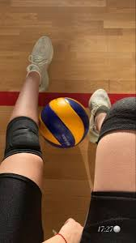
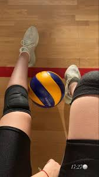

Corpo em movimento
Atividade física é a base da atividade intelectual criativa e dinâmica
A prática de exercícios físicos é essencial em cada fase da vida, sobretudo na adolescência os esportes desenvolvem o indivíduo de diferentes formas tanto mental quanto físico.
II Mova-se
Praticar exercício físico vai além de se movimentar, trata-se de realizar atividades planejadas e
estruturadas com o objetivo de melhorar ou manter a saúde e o condicionamento físico.
Desapegue do celular, desligue-o e vá tomar um sol, precisamos constantemente nos reconectar-mos com a natureza, com nossa essencia!
É necessário reservar um tempo do dia para se exercitar, seja uma caminhada, uma corrida, andar de bicicleta, praticar um esporte ou até mesmo dançar.
Pessoas paradas não crescem!
 

APRENDA A LIDAR COM
DISTRAÇÕES DIGITAIS
Como sobreviver às complicações da era digital?
-
Definir
horários
específicos
para usar redes
sociais. -
Ativar o modo
“não perturbe”
durante o estudo. -
Evitar perda de
tempo com
distrações
digitais.
Motivação
Nem toda motivação vem de fora.
Saber onde quer chegar é o primeiro
passo para seguir seu caminho,
mantenha-se firme na jornada
colocando cor em
seus sonhos e forma a sua vida!
CELEBRANDO PEQUENAS CONQUISTAS
Cada passo a frente é um passo a menos
até seu objetivo, cada pequena
vitória é o
motivo de comemorar.

“TODO DIA É DIA DE COMEMORAR”
— Supercombo